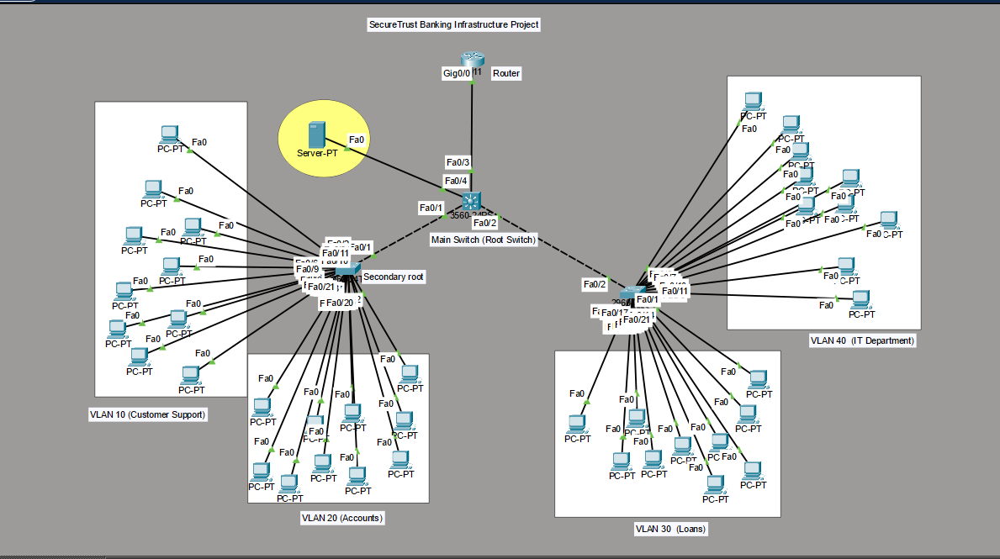
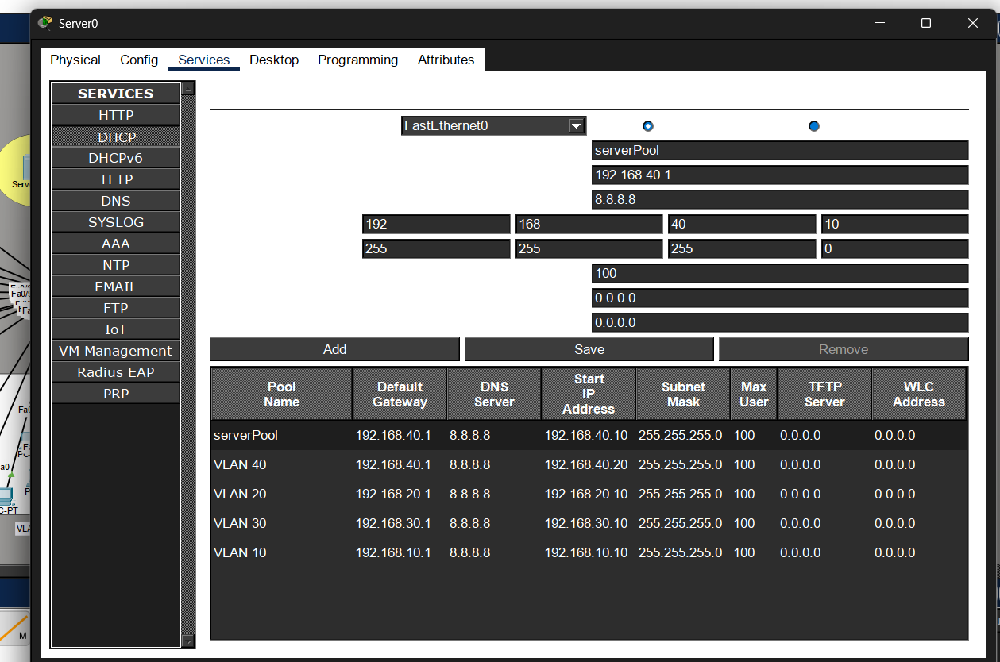
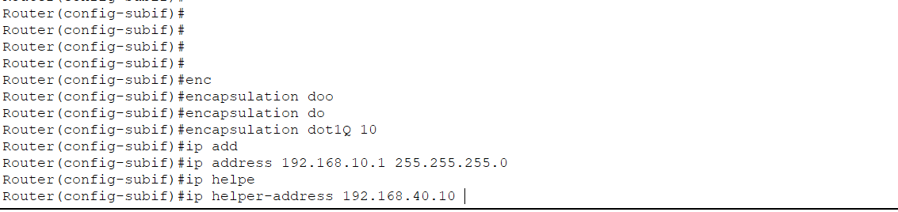
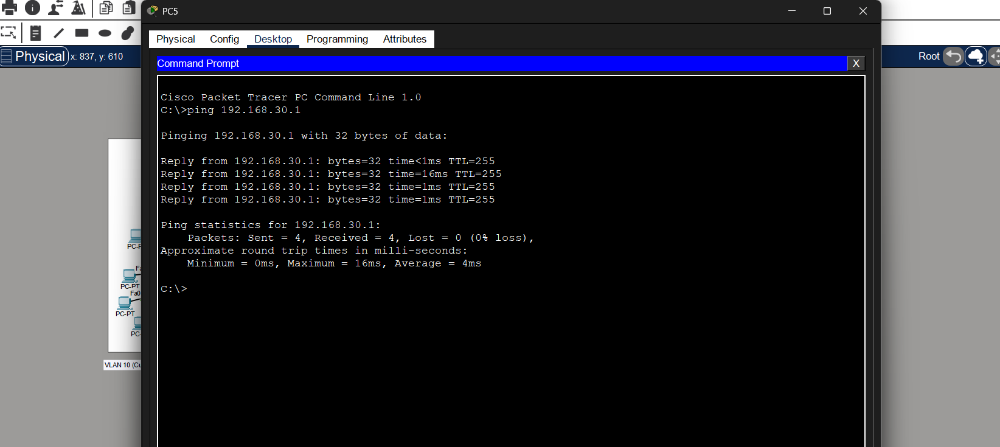
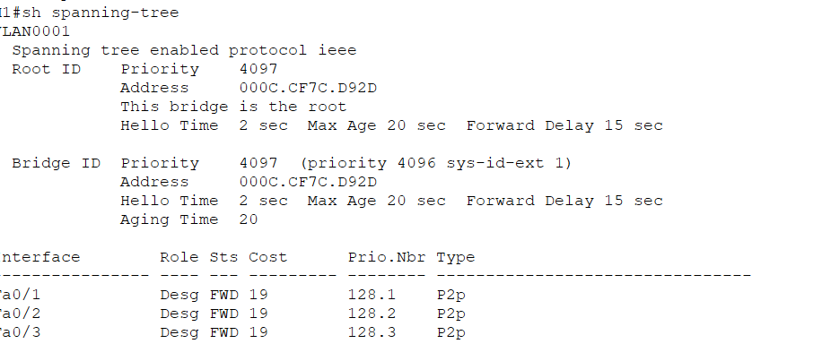
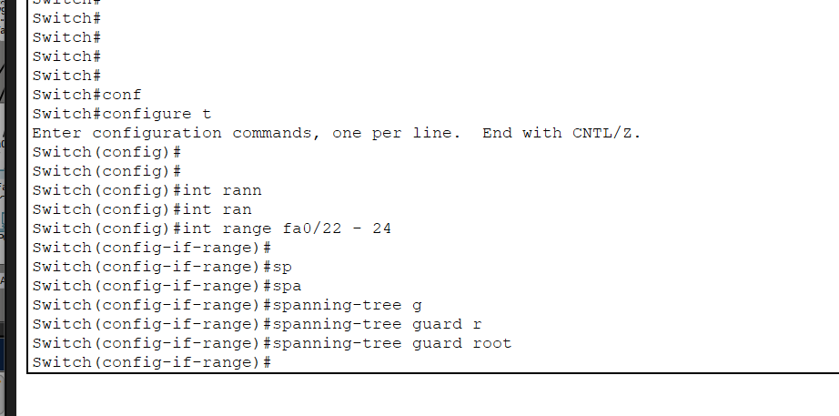

🏦 SecureTrust Banking Enterprise Network
This project demonstrates the implementation of an enterprise-style banking network infrastructure using Cisco Packet Tracer.
The network was designed to simulate real-world enterprise networking concepts including VLAN segmentation, Inter-VLAN Routing, DHCP, STP security, and centralized network management.
The project focuses on building a scalable, secure, and organized network environment for different banking departments.
🎯 Objective
The goal of this lab was to implement and understand how Real-World Enterprise Network works .
🏦 SecureTrust Banking Enterprise Network
- 1 Cisco 2811 Router configured for Router-On-A-Stick (ROAS)
- 1 Core Switch (Cisco 3560)
- 2 Access Switches (Cisco 2960)
- 40 End Devices connected across multiple VLANs
- Centralized DHCP Server for automatic IP assignment
- STP & Root Guard configured for Layer 2 security
🧱 VLAN Structure
- VLAN 10 → Customer Support (192.168.10.0/24)
- VLAN 20 → Accounts (192.168.20.0/24)
- VLAN 30 → Loans (192.168.30.0/24)
- VLAN 40 → IT Department (192.168.40.0/24)
🔗 VLAN Trunking
interface fa0/24
switchport mode trunk
switchport trunk allowed vlan 10,20,30,40
🌍 Router-On-A-Stick (ROAS)
interface g0/0.10
encapsulation dot1Q 10
ip address 192.168.10.1 255.255.255.0
interface g0/0.20
encapsulation dot1Q 20
ip address 192.168.20.1 255.255.255.0
interface g0/0.30
encapsulation dot1Q 30
ip address 192.168.30.1 255.255.255.0
interface g0/0.40
encapsulation dot1Q 40
ip address 192.168.40.1 255.255.255.0
📡 DHCP Deployment
A centralized DHCP server was configured to dynamically assign IP addresses to all VLANs using DHCP pools and IP Helper Address configuration.
🌳 STP & Root Guard
Spanning Tree Protocol (STP) was implemented to prevent Layer 2 loops while Root Guard was configured to protect the network from rogue Root Bridge attacks.
✅ Network Verification
- Successful Inter-VLAN Communication
- Automatic DHCP IP Assignment
- Successful Routing Between Departments
- STP Root Bridge Election Verified
- Root Guard Security Verified
📸 Project Screenshots

Complete SecureTrust Banking enterprise network topology with VLAN segmentation, DHCP server, ROAS, and STP implementation.

Centralized DHCP server configuration with multiple VLAN DHCP pools for automatic IP assignment.

Router-On-A-Stick (ROAS) configuration using subinterfaces and IEEE 802.1Q encapsulation.

Successful inter-VLAN communication verified using ping between different enterprise departments.

STP Root Bridge election verification and Layer 2 loop prevention configuration.

Root Guard security implementation protecting the network against rogue Root Bridge attacks.
🧠 Key Learnings
- Enterprise VLAN Segmentation
- Inter-VLAN Routing using ROAS
- DHCP Relay using IP Helper Address
- STP Root Bridge Election
- Root Guard Security
- Enterprise Network Troubleshooting
- Scalable Network Architecture
🚀 View Full Project on GitHub
Complete configurations, Packet Tracer files, screenshots, and implementation details are available on GitHub.
🚀 View on GitHub
✅ Conclusion
This project simulated a real-world enterprise banking infrastructure while strengthening practical understanding of routing, switching, DHCP deployment, STP security, VLAN segmentation, and scalable enterprise network design.